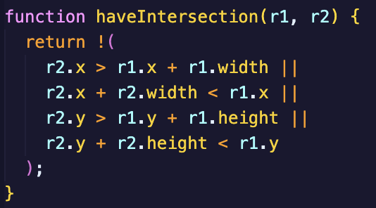
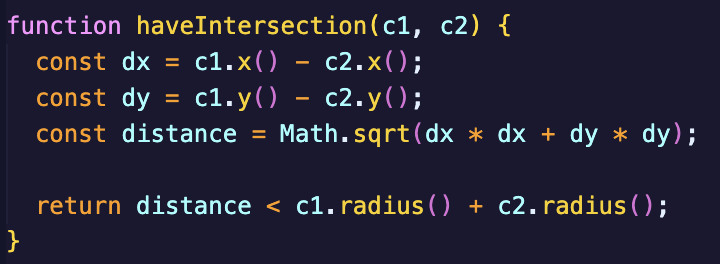

Mediated Expression
Final Project Link!!!
Mercular SurgeIntroduction Exercise:
Hi! My name is Jamie (he/him) and I was born in Melbourne and have lived here my whole life. I have always had an interest in digital design, especially in areas like user experience which is why I chose the course Digital Media (also I'm lazy and you didn't need a folio as a prerequisite). My favourite emoji is 😎 cos it's cool. I have used programs like Illustrator and also VSCode before to create expressive media. I took Computing as a subject in high school so I have a backround in coding, mainly python, but from taking interactive media last year I also now have basic knowledge of HTML, CSS, and JavaScript :)
link to my github :oIn-class Experiments:
Information ExperimentFeedback Experiment
Mapping Experiment
Studio Project Speculation:
Framing:
My initial thoughts for my design project is to include some Konva elements. Through completing the in-class experiments, I was most interested in our mapping experiment and the way that Konva and specifically shapes in Konva worked. I have never worked with Konva before and the thought of learning the ins and outs and the way the code interacts excites me. I am especially interested in the ways that shapes can generate and interact with each other and I want to explore this through the drag and drop method we explored briefly in our first Konva experiment. I also will be incorporating colour and the ways colour can change and morph into my project because I found myself frequently using colour as my source of expression in all of the experiments we did. I probably won’t be using Tone in great detail, realistically only using it if I want to include some simple sound effects to my project as sound is not really a way in which I express myself. I will build on my previous experience from interactive media and use animations and transitions to make my project flow nicely and feel polished. I will take inspiration from Patatap and its use of animations to give its website a very polished and satisfying feel. Also its sense of getting the user to cause these interactions and transitions through exploring its design. There will be lots of javascript logic needed to create this project so I will need to keep my work tidy and not overcomplicate the design so that I can complete it in a timely and orderly manner.
Purpose:
The purpose of my project is to create an interactive experience that is intriguing to the user and provides a challenge in a creative way. My goal is to create a site where users can experiment with shapes in a scene that can interact with each other and create things that are new. It will be like a canvas that users can add shapes to and merge shapes with each other in some sort of form. I am also thinking of creating a logic/challenge element to it that can get users to really think about how they can utilise their tools to create something like a predefined object. Something that challenges the mind. A version of this I am thinking about is a sort of game where you have a randomly generated “target” shape and through merging shapes and averaging their colour, size, etc. you have to try to create an exact copy of the target. I want the actual canvas playability to run similarly to Useless Painter in the way that you don’t always have access to everything you want or need and that you can get different tools almost randomly like how in Useless Painter you can’t choose your colour but only scroll through a selection of a few colours. This way I could have a somewhat simple GUI that doesn’t get overcomplicated but instead leaves the creative solution up to the user.
Worth:
I will take inspiration from websites like Dialed. and What the Hex? Dialed being a fun website that requires you to create a colour from memory and What the Hex a website where you have to choose the correct colour from a hexadecimal code. From Dialed I love the challenge of knowing exactly what you need to create but not knowing exactly how to do it and having to go based off of your intuitions. Having that unknown even when it seems so simple is such a fascinating concept to me and something that I would love to share with others in a fun and captivating way. From What the Hex I like how you can use trial and error to develop your knowledge and eventually find the right solution. The practice of learning through your mistakes and watching learning as your understanding grows stronger to finally be able to achieve a certain goal is a fascinating experience and I want to be able to give that journey to the user. I am also just a big fan of logic puzzles and games with infinite possibilities that can be played again and again and still provide a challenge each time, so I want to create something that aligns with that.
Design Development and Prototyping:
Conceptual Research
After receiving feedback for Assignment 1 and through talking with peers, my concept for my project has slightly shifted. My original proposal was to create a game like website that challenges users in a logical way to merge shapes together to create a certain colour but after discussing this approach with Patrick, we decided that there wasn’t enough expressivity in the idea and I decided to change my concept.
While merging shapes will still be a main feature, my creative context has shifted to instead use this interaction as a way to allow users to explore and create an artwork. Focusing heavily on the interaction design principle of mapping, my concept allows for users to create, move, and merge circles in a digital scene which gets translated into a realised artwork on a separate digital canvas. This allows for the user to have more freedom with the tool and use it and explore it in a way to better express their creativity.
I presented this concept in my prototype by creating a website that could spawn circles and allow users to merge them together. These circles could be spawned by the user as one of three colours (red, green, blue) and merged to create a new circle with a new colour as a mix of the merged colours. After merging, the mapping and expressive elements come together with the user being able to show the unique artwork they had created as a result of their merges.
Technical Research
For my technical approach, I knew that I wanted to use Konva.js to create the shape and merge functions. We experimented with it in class and I enjoyed using the framework and was interested in furthering my understanding with its many features. As a base, I used the mapping experiment we had already made in class to start working on my project.
The main challenge I found I was going to have was creating the collision mechanism for the circles on the page. At first I tried using Konva’s tutorials on their website, specifically their collision detection demo. While the code did end up working, the issue I had was that the collision detection system used rectangles to calculate rather than circles which at first I thought wouldn’t be an issue, but after testing I found that it felt clunky and incohesive. After doing some research online though, I found a common solution on how to know if two circles are colliding. By using Pythagoras’ theorem to find the distance between the centre of two circles, I could detect whether they were colliding by determining whether the distance between them was less than their radii added together. Here is the before and after of that code:
Before:

After:

The merge logic builds on this code by calling this function every time a circle is dragged for every single circle that is on the screen. If the collision function comes back as true, the intersecting circles have a stroke added to them to visually show the user that they are mergeable. When the circle is dropped, if there are colliding circles the merge functions will run. Essentially this prompts a bunch of math calculations to figure out the average position and colour of the circles along with the added size.
Some other features I included in my prototype were the animations of the circles for which I used Konva’s built in tween animation system that I learned from this tutorial, and also the show artwork feature that I created by simply building a new, invisible layer that saves a copy of all the merged circles that can later be presented to the user.
Project Prototype
Peer User Testing Form
Peer User Testing Feedback
My peer user testing form consisted of 4 main questions to gain insight on how the user interacted with my prototype. The form collected a total of 15 responses.
1. Was it clear how the tool could be used or did it take some exploration to figure out? Furthermore do you think instructions are necessary?
Only 1/5 of testers thought that the tool was easy to figure out with most stating that it took them a while to discover how the drag function and show artwork function worked. A majority believed that instructions are necessary for the website although there was also feedback that the exploration process was fun. From this I have gathered that there is a little too much confusion surrounding some of the functions of the site and that some sort of additional help will need to be added to aid users in getting to know the program. My idea is to implement some sort of tutorial that users can click through that explains how to drag the circles and create the artwork. I would however like to make this optional or able to be skipped as there was that positive feedback about the exploration, so I don’t want to take that aspect away for everyone. I will also look into better feedback for some of the functions for example, the circles glowing when hovered or the show artwork button lighting up only once a merge has been completed. This feedback should be easy to implement but the tutorial might take a little longer to code and will need to be styled correctly when I start to polish the looks of the site, so it is important that I am deliberate with its execution.
2. Were you able to express yourself differently each time you used the tool or did it feel repetitive and why?
There was a common opinion from the testers that the tool felt too repetitive and for a few different reasons. There was critique on the limited choice of colours and shapes, the colour merging effect being not strong enough, and the circles becoming too large to quickly. The responses lead me to believe that the tool needs to have more options for expression and needs an ironing out for how some of the merge functions are calculated. For this I have come up with the following solutions:
- Add a random colour button that creates a circle of a random colour
- Add a black and white circle colour button
- Add the option to change the shapes
- Create different options for colour merging e.g. screen or multiply
- Make circle merge size be dependent on area rather than radius
With these changes though there are some things to consider. For the random colour I would ideally make it have only a certain amount of uses to stop the user from just cycling through colours to get the one they want rather than using the merge function. The option to change shapes would be tricky to implement as I would need to go back and change collision and shape properties for all my functions. I also feel that changing the shape while adding a bit of variance, doesn’t fix these other core issues so for these reasons it will be last priority on my list of things to add. For the colour merging options, the current averaging method I am using makes the merging feel dull and restricted. My idea though is to give the user choices as to which method they want to use, maybe using a toggle, to make the tool less repetitive as users can use these combinations of methods to create a wider range of colours.
3. Try to create the most colourful artwork you can. Was it easy or did you sturggle? (Explain why)
This question gathered very similar responses to the last, with the main crossover and emphasis being on the issue of the circles becoming too large and the colours and colour merging not allowing for enough variance. This proves to me the importance of implementing the above changes to do with colour and size and will be a main priority for me going ahead.
4. Are there any features you would like to see added to the tool? Or could any existing features be improved?
The most requested feature was to add sound effects to the tool when merging. This was something that I had thought of previously but is now at the front of my mind of things to implement. Using Tone.js I will try to add sound effects to make the website feel more polished and attractive to use. A few people also mentioned they would like to see the original circles before the merge be included in the final artwork. This is a feasible idea that I believe will help the tool to be more exciting and produce better results. There were a couple suggestions to add a colour wheel that users could use to spawn in circles of any colour but I believe this would take away from the experimental merging aspect and make the process too streamlined. An outlier response I received was to make the size of the circle effect how much each colour effected the merge. This idea is very interesting and feels like it would be a very intuitive change, but I am not sure whether it would actually create enough of a difference. If I have time, I will definitely consider experimenting with this to see if it can improve the merging cohesion.
Project Timeline
Up until now my project timeline has run pretty smoothly. I had my project conceptualisation completed and submitted on time. After discussions with Patrick and my peer review group my concept had slightly changed after the speculation, but I was able to keep up to date with my code and work through these challenges. My prototype and peer user testing form were both completed for our class in week 7 and I was able to gain and give valuable information about mine and my peers’ prototypes. Assignment 2 is on track to be submitted by the deadline also.
Moving forward I will aim to implement the changes talked about above consistently over the next few weeks. My goal is to focus on one of the implementations between each of our classes and use one week at the end before assignment 3 to polish and clean up the final design of the website.
Reflection:
The functionality of my final design follows closely along with the purpose I outlined in my speculation. I was able to create an interactive experience where users can create, move around, and merge circles to generate new circles with different colours and sizes. The concept however has shifted from being a logical challenge with an end goal to an open workspace that can be used and explored to create an expressive artwork. I have however adopted the minimalist atmosphere like in “Useless Painter” by limiting the tools and colours the user has access to, prompting them to instead use experimentation to achieve their desired outcome.
My initial judgement of worth helped to guide and determine the values and characteristics of my final design. My goal was to create a fun website that combines problem-solving with a simple colour-based mechanic. I have achieved this mechanic through building my tool around the merging of different coloured circles that can create new circles that grow larger in size and become an average colour of those that are merged. The characteristics of fun come through with a simplistic but colourful design, and building on these, my tool has become more satisfying showcasing many smooth and fluid animations. Looking back though I would have liked to have added sound to the site to give it a more playful feel. I also wanted the tool to be re-playable which I have achieved by adding variance to the colours as well as a random colour feature that can only be used once per artwork.
The problem-solving aspect is present in the sense that users have to figure out how the colours will merge to create their desired outcome, but this is a more subtle inclusion compared to my initial speculation. My first idea was to create a tool with a gamified style where the user had to merge to create a final outcome but through talking to Patrick and my peers, I learned that this application of the idea made the tool lack the brief’s desired expression. While I have still taken the stylistic inspiration and the feeling of unknown from “Dialed.gg” and “What the Hex?”, I have left behind the solution-based component. I think this progression worked successfully and helped my tool foster a more creative and explorative process.
One of my goals for my tool was for it to be able to be used by most people. I personally find drawing and art very challenging and so I wanted to create something that didn’t require me or others to have any prior technical knowledge or skill. My approach to this was to use mapping as a novel way to create art through an experience. Rather than creating and inputting straight onto an art canvas, with my tool, users go through a separate workspace stage where they first complete all the playful and satisfying circle merges which combines user-controlled mapping with visually appealing animated feedback. Only after the user decides to finish this stage will their energetic artwork become visible through an appearing canvas with a sequentially timed animation to display the user's artwork’s journey. In this way, with very simplistic interface design, I have created a fulfilling interactive experience for the user that transforms into a personalised, novel artwork, which I feel was successful in minimising the need for knowing illustration techniques.
My first design experiment I completed in class where I compared a few different colour merging techniques. Originally, I was averaging each of the RGB values of the circles that were being merged but after receiving feedback from our peer user tests that the colours looked a bit dull, I decided to experiment with 2 other options. These were: using the mathematic algorithm that programs use to produce the “screen” colour blending option, and my own concept of averaging each of the HSL values of the circles. I was able to code these up pretty quickly although the HSL method required me to learn a conversion function to change RGB to HSL. After presenting each of these iterations to the class, I received majority feedback that the HSL averaging was the most effective method of merging the colours. The RGB while being able to calculate and preserve the hues of the colours the best, still created very dull colours as the average saturation after every merge stayed at around 50% due to the way the RGB values interacted with each other. The screen method while creating much more vibrant colours, failed when it came to merging a colour more than once as the RGB values all ended up adding to equal 255, creating a white circle. The HSL averaging turned out to be a happy middle ground where the vibrancy of the colours was kept due to the saturation and lightness being preserved while the hue of could be averaged between the merged circles. This change made a massive improvement to the tool making it feel a lot more joyful and gave the user a better sense of control over their merges. There were however a few slight issues with the hue averaging which led to the green colours appearing slightly more frequently so maybe adding a slight element of randomness, or a different interaction e.g. the position on the canvas determines the colour averaging method, could have improved this system.
My second experiment was deciding how the canvas would show up on the screen and whether the user could switch back and forth from canvas to workspace. While working on the canvas feature and getting feedback from Patrick, we noticed that the new animation I had created let the user go back to the workspace from the canvas to keep merging circles. Patrick raised how this could be an important decision for interaction in the tool and whether this feature should be included. I decided to create these two different iterations at home with the exact same visual design, the only difference being the switch of the “Back” button, which lets the user go back to the workspace, with a “Reset” button, which goes back to the workspace but automatically resets it. After testing each iteration multiple times, I decided that the ability to go back to the workspace made the tool feel too methodical and meticulous, taking away from its explorative nature.
My production timeline throughout the project felt quite bumpy and disorganised at times. During the early stages I was able to keep on top of my goals and the work that needed to be completed, but as the tool got to a stage where there were many smaller tweaks and features to add, I found it a lot harder to stay consistent. My main challenge was deciding which feature I should be adding next. Whether it was polishing the design or slightly balancing the size addition function, I found it hard to determine a priority and therefore ended up stagnating with a functional yet unpolished tool. I was able to implement a good amount of these changes in the final few days but overall, the tool wasn’t as finalised as I would have liked it to be due to running out of time in the end. To navigate this in the future, I would try using a schedule like a Gantt chart to help achieve my goals by a deadline by implementing milestones to work towards.
The aspect of my design process that I found most rewarding was being able to work through and overcome challenging coding tasks. Many times throughout the project I found myself getting stuck with a certain bit of code that didn’t work or that I maybe didn’t believe was possible. I am proud of myself though for pushing through these moments, asking for help from my peers and Patrick, and finding solutions and workarounds to these issues. Finding the solution to something that's going wrong, whether its super simple or a complex function, feels so fulfilling and gratifying and is one of the reasons I love coding so much. An example is when I was having issues with the target circle’s glow effect and Patrick and I were able to work together to troubleshoot and find a working solution that pieced all the missing pieces together. Figuring out and understanding why the code didn’t work and what was needed to fix it enriches my learning and helps me to think outside the box, finding new bits of code to use and appreciate.
Something I found very challenging though was keeping my code organised and providing comments throughout. I very frequently like to dive straight into the mechanics of my code without a good organisation structure. A lot of the time I will create names for variables that make sense at the time but that I tend to forget after leaving the project for a few days. I also tell myself that I will write all the comments afterwards, but this makes it a difficult process while coding and later to figure out what each of the lines of code do. My main thing to work on is being deliberate with the way I name my variables and focusing on writing comments as I go along as it helps the entire future coding process run smoother.
After playing with Cecile’s Ripple tool, I found the way she used sound to invoke a playful atmosphere was very insightful. I loved the way she characterised each of her fish to play different sounds and have different behavioural patterns. This contrasts with my project as the variation in feedback depending on the colour and size of the shape doesn’t really change apart from the colour of the glow changing. I really enjoy the emotions and feelings I get towards each of the fish in Ripple and how Cecile has approached this user interaction. I would love if there was a way to give my tool more character and I think using sound to do this would give a more energetic and light-hearted experience. With this insight if I were to continue with my project, I would like to add sound that changes and adapts depending on the colour and size of the circles and maybe even add different types of shapes with different sounds to further implement this idea.